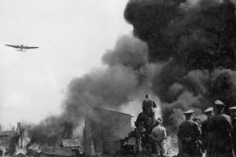

Lezione 19  La seconda guerrra mondiale
La seconda guerrra mondiale

-
140
530
-
145
480
-
155
455
-
390
285
MOSCA
Il 23 agosto, a Mosca, Molotov e Von Ribbentropp firmano un patto di non aggressione tra l'Unione Sovietica e il Terzo Reich, due stati apparentemente in insanabile conflitto.
Stabilisce tra l'altro le rispettive sfere di influenza nelle zone di confine e in particolare sulla Polonia. Conviene ad entrambi per guadagnare tempo, ma viene rotto appena due anni dopo dai tedeschi che invadono l'Unione Sovietica.
VARSAVIA
La capitale polacca viene occupata dai tedeschi il 28 settembre, meno di un mese dopo l'inizio delle ostilità. La Polonia viene smembrata. A est ci sono i sovietici, a ovest i tedeschi. In mezzo un Governatorato Generale sotto il totale controllo tedesco.BERLINO
Il 22 maggio a Berlino Italia e Germania siglano il Patto d'Acciaio, una alleanza tra i due paesi che si impegnano ad aiutarsi sul piano diplomatico e militare per difendere i propri interessi vitali.
L'alleanza è sia difensiva, sia offensiva, e di fatto lega l'Italia alle decisioni tedesche. Però Mussolini fa sapere in modo non ufficiale a Hitler che l'Italia non è ancora pronta alla guerra, e a settembre dichiara la non belligeranza del paese.MONTEVIDEO
La prima vera battaglia navale del conflitto si svolge a dicembre al largo del Rio della Plata, dove la nave da battaglia tedesca Graf von Spee, che incrociava in Atlantico per colpire i mercantili nemici, si scontra con la flotta inglese.
Danneggiata, cerca riparo nel porto neutrale di Montevideo. Obbligata a salpare dopo pochi giorni, preferisce autoaffondarsi. Il suo comandante Hans Langsdorff si suicida.